%matplotlib inline
import numpy as np
import scipy as sp
import matplotlib as mpl
import matplotlib.cm as cm
import matplotlib.pyplot as plt
import pandas as pd
pd.set_option('display.width', 500)
pd.set_option('display.max_columns', 100)
pd.set_option('display.notebook_repr_html', True)
import seaborn as sns
sns.set_context("poster")Multi-Layer Perceptron for Classification
Training neural networks to classify synthetic data with decision boundaries.
neural-networks
optimization
models
Implements multi-layer perceptrons for classification tasks using PyTorch. Generates synthetic datasets and trains networks to learn non-linear decision boundaries, visualizing how MLPs separate classes in feature space.
Two additional imports here, seaborn and tqdm. Install via pip or conda
c0=sns.color_palette()[0]
c1=sns.color_palette()[1]
c2=sns.color_palette()[2]from matplotlib.colors import ListedColormap
cmap_light = ListedColormap(['#FFAAAA', '#AAFFAA', '#AAAAFF'])
cmap_bold = ListedColormap(['#FF0000', '#00FF00', '#0000FF'])
cm = plt.cm.RdBu
cm_bright = ListedColormap(['#FF0000', '#0000FF'])
def points_plot(ax, Xtr, Xte, ytr, yte, clf_predict, colorscale=cmap_light, cdiscrete=cmap_bold, alpha=0.3, psize=20):
h = .02
X=np.concatenate((Xtr, Xte))
x_min, x_max = X[:, 0].min() - .5, X[:, 0].max() + .5
y_min, y_max = X[:, 1].min() - .5, X[:, 1].max() + .5
xx, yy = np.meshgrid(np.linspace(x_min, x_max, 100),
np.linspace(y_min, y_max, 100))
Z = clf_predict(np.c_[xx.ravel(), yy.ravel()])
ZZ = Z.reshape(xx.shape)
plt.pcolormesh(xx, yy, ZZ, cmap=cmap_light, alpha=alpha, axes=ax)
showtr = ytr
showte = yte
ax.scatter(Xtr[:, 0], Xtr[:, 1], c=showtr-1, cmap=cmap_bold, s=psize, alpha=alpha,edgecolor="k")
# and testing points
ax.scatter(Xte[:, 0], Xte[:, 1], c=showte-1, cmap=cmap_bold, alpha=alpha, marker="s", s=psize+10)
ax.set_xlim(xx.min(), xx.max())
ax.set_ylim(yy.min(), yy.max())
return ax,xx,yyCreate some noisy moon shaped data
In order to illustrate classification by a MLP, we first create some noisy moon shaped data. The noise level here and the amount of data is the first thing you might want to experiment with to understand the interplay of amount of data, noise level, number of parameters in the model we use to fit, and overfitting as illustrated by jagged boundaries.
We standardize the data so that it is distributed about 0 as well
from sklearn.datasets import make_moons
from sklearn.model_selection import train_test_split
from sklearn.preprocessing import StandardScaler
dataX, datay = make_moons(noise=0.35, n_samples=400)
dataX = StandardScaler().fit_transform(dataX)
X_train, X_test, y_train, y_test = train_test_split(dataX, datay, test_size=.4)h=.02
x_min, x_max = dataX[:, 0].min() - .5, dataX[:, 0].max() + .5
y_min, y_max = dataX[:, 1].min() - .5, dataX[:, 1].max() + .5
xx, yy = np.meshgrid(np.arange(x_min, x_max, h),
np.arange(y_min, y_max, h))
# just plot the dataset first
cm = plt.cm.RdBu
cm_bright = ListedColormap(['#FF0000', '#0000FF'])
ax = plt.gca()
# Plot the training points
ax.scatter(X_train[:, 0], X_train[:, 1], c=y_train, cmap=cm_bright, alpha=0.5, s=30)
# and testing points
ax.scatter(X_test[:, 0], X_test[:, 1], c=y_test, cmap=cm_bright, alpha=0.5, s=30)
ax.set_xlim(xx.min(), xx.max())
ax.set_ylim(yy.min(), yy.max())(-3.23517784804296, 3.0648221519570455)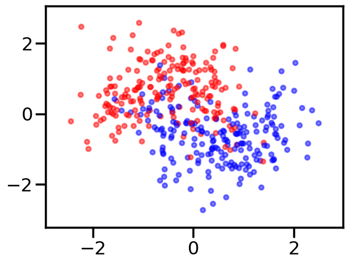
import torch
import torch.nn as nn
from torch.nn import functional as fn
from torch.autograd import Variable
import torch.utils.dataWriting a Multi-Layer Perceptron class
We wrap the construction of our network
class MLP(nn.Module):
def __init__(self, input_dim, hidden_dim, output_dim, nonlinearity = fn.tanh, additional_hidden_wide=0):
super(MLP, self).__init__()
self.fc_initial = nn.Linear(input_dim, hidden_dim)
self.fc_mid = nn.ModuleList()
self.additional_hidden_wide = additional_hidden_wide
for i in range(self.additional_hidden_wide):
self.fc_mid.append(nn.Linear(hidden_dim, hidden_dim))
if self.additional_hidden_wide != -1:
self.fc_final = nn.Linear(hidden_dim, output_dim)
self.nonlinearity = nonlinearity
def forward(self, x):
x = self.fc_initial(x)
x = self.nonlinearity(x)
if self.additional_hidden_wide != -1:
for i in range(self.additional_hidden_wide):
x = self.fc_mid[i](x)
x = self.nonlinearity(x)
x = self.fc_final(x)
return xWe use it to train. Notice the double->float casting. Numpy defautlts to double but torch defaulta to float to enable memory efficient GPU usage.
np.dtype(float).itemsize, np.dtype(np.double).itemsize(8, 8)But torch floats are 4 byte as can be seen from here: http://pytorch.org/docs/master/tensors.html
Training the model
Points to note:
- printing a model prints its layers, handy. Note that we implemented layers as functions. The autodiff graph is constructed on the fly on the first forward pass and used in backward.
- we had to cast to float
model.parametersgives us params,model.named_parameters()gives us assigned names. You can set your own names when you create a layer- we create an iterator over the data, more precisely over batches by doing
iter(loader). This dispatches to the__iter__method of the dataloader. (see https://github.com/pytorch/pytorch/blob/4157562c37c76902c79e7eca275951f3a4b1ef78/torch/utils/data/dataloader.py#L416) Always explore source code to understand what is going on
model2 = MLP(input_dim=2, hidden_dim=3, output_dim=2, nonlinearity=fn.tanh, additional_hidden_wide=1)
print(model2)
criterion = nn.CrossEntropyLoss(size_average=True)
dataset = torch.utils.data.TensorDataset(torch.from_numpy(X_train), torch.from_numpy(y_train))
loader = torch.utils.data.DataLoader(dataset, batch_size=64, shuffle=True)
lr, epochs, batch_size = 1e-1 , 1000 , 64
optimizer = torch.optim.SGD(model2.parameters(), lr = lr )
accum=[]
for k in range(epochs):
localaccum = []
for localx, localy in iter(loader):
localx = Variable(localx.float())
localy = Variable(localy.long())
output = model2.forward(localx)
loss = criterion(output, localy)
model2.zero_grad()
loss.backward()
optimizer.step()
localaccum.append(loss.item())
accum.append(np.mean(localaccum))
plt.plot(accum); MLP(
(fc_initial): Linear(in_features=2, out_features=3, bias=True)
(fc_mid): ModuleList(
(0): Linear(in_features=3, out_features=3, bias=True)
)
(fc_final): Linear(in_features=3, out_features=2, bias=True)
)/Users/rahul/Library/Caches/uv/archive-v0/nvTdsg5itG6f4n0ZtJtSg/lib/python3.14/site-packages/torch/nn/modules/loss.py:44: UserWarning: size_average and reduce args will be deprecated, please use reduction='mean' instead.
self.reduction: str = _Reduction.legacy_get_string(size_average, reduce)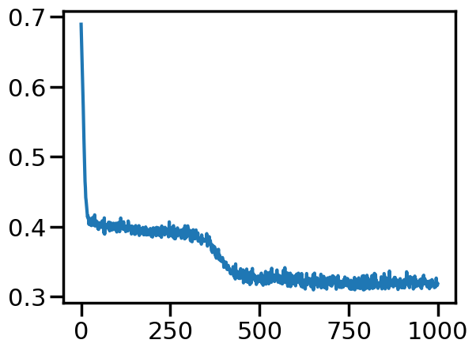
The out put from the foward pass is run on the entire test set. Since pytorch tracks layers upto but before the loss, this handily gives us the softmax output, which we can then use np.argmax on.
testoutput = model2.forward(Variable(torch.from_numpy(X_test).float()))
testoutputtensor([[ 0.8709, -2.2377],
[-1.7042, 1.5297],
[ 2.0050, -3.3973],
[-1.3879, 0.4932],
[-1.0866, 0.6630],
[ 0.0442, -1.4037],
[-1.6150, 0.7494],
[-1.2915, 1.0131],
[-1.0097, -0.2000],
[-1.5825, 1.4703],
[-1.8236, 1.0667],
[ 1.9994, -3.5696],
[ 0.3444, -1.9289],
[ 1.4845, -2.9599],
[ 0.9908, -2.6027],
[-1.8363, 1.2384],
[-0.1085, -1.3755],
[ 1.0364, -2.6599],
[ 1.4413, -2.7964],
[ 2.0812, -3.4342],
[ 1.3086, -2.8725],
[-0.0888, -1.2649],
[ 0.6750, -2.0513],
[ 1.4112, -2.8581],
[-1.5618, 0.7254],
[ 1.0902, -2.4541],
[-1.5283, 0.6949],
[-0.4754, -0.9340],
[ 1.1470, -2.6421],
[ 0.9648, -2.3365],
[-0.2436, -1.1277],
[-1.0140, -0.1683],
[ 0.9581, -2.3227],
[-1.3805, 0.9009],
[ 0.4942, -2.0949],
[ 1.3222, -2.9430],
[-1.7414, 0.9598],
[-1.3347, 0.4234],
[-1.5957, 1.4498],
[-2.3601, 2.1090],
[-1.6290, 1.5536],
[-1.3480, 0.5061],
[ 2.1985, -3.7190],
[-1.4359, 0.4588],
[-1.5139, 1.3897],
[ 1.5787, -3.1889],
[ 1.4894, -2.8399],
[-0.4149, -0.6748],
[-0.2946, -0.9954],
[-1.3980, 0.9844],
[ 0.3842, -1.7526],
[-0.4721, -0.9150],
[ 0.8460, -2.3735],
[-2.0151, 1.4536],
[ 2.2109, -3.5492],
[-1.0963, 0.0858],
[-0.8885, 0.2380],
[-1.0822, 0.2813],
[ 1.3285, -2.6833],
[-0.9822, -0.2358],
[-1.5839, 1.4839],
[-1.4764, 1.3219],
[ 1.2204, -2.6303],
[ 0.4156, -2.0061],
[-1.9099, 1.3980],
[-1.3899, 1.1452],
[-0.8930, -0.3054],
[ 1.4575, -3.0665],
[-0.8652, -0.3651],
[ 1.1312, -2.6245],
[-1.2373, 0.1397],
[-0.1622, -1.2656],
[-0.9885, -0.2164],
[ 0.1202, -1.5261],
[-1.8774, 1.1667],
[-0.4756, -0.7913],
[ 1.9457, -3.4512],
[ 1.4783, -2.8622],
[-1.3172, 0.4333],
[-0.3166, -1.0738],
[-0.7397, -0.5774],
[-1.1162, 0.5455],
[ 1.4427, -2.7952],
[-1.5045, 0.5556],
[-1.9012, 1.1962],
[-0.9749, -0.2034],
[-1.6428, 1.0028],
[ 0.6063, -2.1743],
[-0.7840, -0.1702],
[ 0.7128, -2.1206],
[-1.8696, 1.5188],
[-1.6982, 1.5982],
[-1.0184, -0.1739],
[-1.6722, 1.5627],
[-1.1567, 0.4104],
[-1.5837, 1.4957],
[-1.6123, 1.5215],
[-0.5340, -0.7768],
[-1.3127, 0.5834],
[-0.6729, -0.0808],
[-1.6018, 0.7149],
[ 2.0057, -3.3417],
[-1.3578, 0.3454],
[-1.5318, 0.5987],
[-0.7278, 0.1304],
[-1.6052, 1.4723],
[ 0.3889, -1.8975],
[-0.9135, 0.2219],
[ 1.2324, -2.5957],
[ 1.1081, -2.7125],
[ 1.3859, -3.0044],
[-1.6053, 1.5257],
[-1.6180, 1.5442],
[ 0.0303, -1.5226],
[ 0.4051, -1.9009],
[-0.2090, -1.1201],
[-1.4175, 1.0263],
[-2.0198, 1.4104],
[-1.7859, 1.0046],
[-1.6638, 1.5575],
[ 1.2750, -2.6326],
[-0.1842, -1.2925],
[ 1.0513, -2.6607],
[ 0.2275, -1.7869],
[-1.5248, 1.4073],
[-1.3537, 0.3627],
[-1.4901, 1.2079],
[-0.5130, -0.3161],
[ 0.8565, -2.4188],
[-1.9252, 1.7346],
[-0.7439, -0.4784],
[-1.6283, 1.5412],
[-1.8134, 1.5969],
[ 0.4788, -1.8764],
[-0.3556, -0.9382],
[ 0.3595, -1.6526],
[ 1.5704, -2.9231],
[ 0.6244, -2.1174],
[-1.2885, 0.2182],
[-1.1180, 0.5377],
[-0.8549, -0.3997],
[-0.7897, -0.2315],
[-1.7478, 0.9427],
[ 1.0919, -2.7145],
[-1.3709, 0.3423],
[-0.8860, 0.1285],
[-2.2018, 1.7751],
[-0.4975, -0.8259],
[-0.3006, -0.5519],
[-1.5281, 1.3762],
[-1.2142, 0.1457],
[-1.7979, 1.2782],
[ 0.0788, -1.4206],
[-1.6480, 1.4835],
[-1.7234, 0.9120],
[ 1.6459, -3.1941],
[-0.7522, -0.0385],
[-1.5479, 1.4231],
[-0.0564, -1.4503],
[ 1.1602, -2.6782]], grad_fn=<AddmmBackward0>)y_pred = testoutput.data.numpy().argmax(axis=1)
y_predarray([0, 1, 0, 1, 1, 0, 1, 1, 1, 1, 1, 0, 0, 0, 0, 1, 0, 0, 0, 0, 0, 0,
0, 0, 1, 0, 1, 0, 0, 0, 0, 1, 0, 1, 0, 0, 1, 1, 1, 1, 1, 1, 0, 1,
1, 0, 0, 0, 0, 1, 0, 0, 0, 1, 0, 1, 1, 1, 0, 1, 1, 1, 0, 0, 1, 1,
1, 0, 1, 0, 1, 0, 1, 0, 1, 0, 0, 0, 1, 0, 1, 1, 0, 1, 1, 1, 1, 0,
1, 0, 1, 1, 1, 1, 1, 1, 1, 0, 1, 1, 1, 0, 1, 1, 1, 1, 0, 1, 0, 0,
0, 1, 1, 0, 0, 0, 1, 1, 1, 1, 0, 0, 0, 0, 1, 1, 1, 1, 0, 1, 1, 1,
1, 0, 0, 0, 0, 0, 1, 1, 1, 1, 1, 0, 1, 1, 1, 0, 0, 1, 1, 1, 0, 1,
1, 0, 1, 1, 0, 0])You can write your own but we import some metrics from sklearn
from sklearn.metrics import confusion_matrix, accuracy_score
confusion_matrix(y_test, y_pred)array([[67, 10],
[ 5, 78]])accuracy_score(y_test, y_pred)0.90625We can wrap this machinery in a function, and pass this function to points_plot to predict on a grid and thus give us a boundary viz
def make_pred(X_set):
output = model2.forward(Variable(torch.from_numpy(X_set).float()))
return output.data.numpy().argmax(axis=1)with sns.plotting_context('poster'):
ax = plt.gca()
points_plot(ax, X_train, X_test, y_train, y_test, make_pred);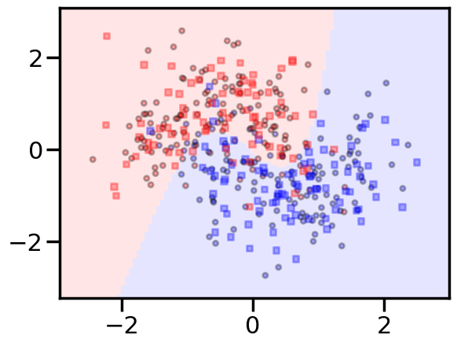
Making a scikit-learn like interface
Since we want to run many experiments, we’ll go ahead and wrap our fitting process in a sklearn style interface. Another example of such an interface is here
from tqdm import trange, tqdm
class MLPClassifier:
def __init__(self, input_dim, hidden_dim,
output_dim, nonlinearity = fn.tanh,
additional_hidden_wide=0):
self._pytorch_model = MLP(input_dim, hidden_dim, output_dim, nonlinearity, additional_hidden_wide)
self._criterion = nn.CrossEntropyLoss(size_average=True)
self._fit_params = dict(lr=0.1, epochs=200, batch_size=64)
self._optim = torch.optim.SGD(self._pytorch_model.parameters(), lr = self._fit_params['lr'] )
def __repr__(self):
num=0
for k, p in self._pytorch_model.named_parameters():
numlist = list(p.data.numpy().shape)
if len(numlist)==2:
num += numlist[0]*numlist[1]
else:
num+= numlist[0]
return repr(self._pytorch_model)+"\n"+repr(self._fit_params)+"\nNum Params: {}".format(num)
def set_fit_params(self, *, lr=0.1, epochs=200, batch_size=64):
self._fit_params['batch_size'] = batch_size
self._fit_params['epochs'] = epochs
self._fit_params['lr'] = lr
self._optim = torch.optim.SGD(self._pytorch_model.parameters(), lr = self._fit_params['lr'] )
def fit(self, X_train, y_train):
dataset = torch.utils.data.TensorDataset(torch.from_numpy(X_train), torch.from_numpy(y_train))
loader = torch.utils.data.DataLoader(dataset, batch_size=self._fit_params['batch_size'], shuffle=True)
self._accum=[]
for k in trange(self._fit_params['epochs']):
localaccum = []
for localx, localy in iter(loader):
localx = Variable(localx.float())
localy = Variable(localy.long())
output = self._pytorch_model.forward(localx)
loss = self._criterion(output, localy)
self._pytorch_model.zero_grad()
loss.backward()
self._optim.step()
localaccum.append(loss.item())
self._accum.append(np.mean(localaccum))
def plot_loss(self):
plt.plot(self._accum, label="{}".format(self))
plt.legend()
plt.show()
def plot_boundary(self, X_train, X_test, y_train, y_test):
points_plot(plt.gca(), X_train, X_test, y_train, y_test, self.predict);
plt.text(1, 1, "{}".format(self), fontsize=12)
plt.show()
def predict(self, X_test):
output = self._pytorch_model.forward(Variable(torch.from_numpy(X_test).float()))
return output.data.numpy().argmax(axis=1)
Some points about this:
- we provide the ability to change the fitting parameters
- by implementing a
__repr__we let an instance of this class print something useful. Specifically we created a count of the number of parameters so that we can get a comparison of data size to parameter size.
The simplest model, and a more complex model
logistic = MLPClassifier(input_dim=2, hidden_dim=2, output_dim=2, nonlinearity=lambda x: x, additional_hidden_wide=-1)
logistic.set_fit_params(epochs=1000)
print(logistic)
logistic.fit(X_train,y_train)/Users/rahul/Library/Caches/uv/archive-v0/nvTdsg5itG6f4n0ZtJtSg/lib/python3.14/site-packages/torch/nn/modules/loss.py:44: UserWarning: size_average and reduce args will be deprecated, please use reduction='mean' instead.
self.reduction: str = _Reduction.legacy_get_string(size_average, reduce)MLP(
(fc_initial): Linear(in_features=2, out_features=2, bias=True)
(fc_mid): ModuleList()
)
{'lr': 0.1, 'epochs': 1000, 'batch_size': 64}
Num Params: 6 0%| | 0/1000 [00:00<?, ?it/s] 7%|▋ | 69/1000 [00:00<00:01, 686.82it/s] 14%|█▍ | 138/1000 [00:00<00:01, 670.84it/s] 21%|██ | 206/1000 [00:00<00:01, 643.04it/s] 27%|██▋ | 273/1000 [00:00<00:01, 651.77it/s] 35%|███▍ | 348/1000 [00:00<00:00, 685.23it/s] 42%|████▏ | 420/1000 [00:00<00:00, 696.56it/s] 49%|████▉ | 490/1000 [00:00<00:00, 637.89it/s] 56%|█████▌ | 562/1000 [00:00<00:00, 660.94it/s] 64%|██████▍ | 638/1000 [00:00<00:00, 688.54it/s] 72%|███████▏ | 716/1000 [00:01<00:00, 715.57it/s] 80%|███████▉ | 795/1000 [00:01<00:00, 736.12it/s] 87%|████████▋ | 874/1000 [00:01<00:00, 751.27it/s] 95%|█████████▌| 952/1000 [00:01<00:00, 759.04it/s]100%|██████████| 1000/1000 [00:01<00:00, 702.41it/s]with sns.plotting_context('poster'):
logistic.plot_loss()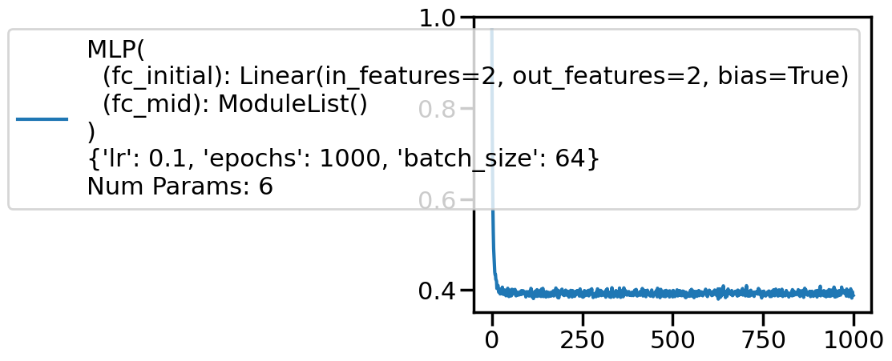
ypred = logistic.predict(X_test)
#training and test accuracy
accuracy_score(y_train, logistic.predict(X_train)), accuracy_score(y_test, ypred)(0.825, 0.8625)with sns.plotting_context('poster'):
logistic.plot_boundary(X_train, X_test, y_train, y_test)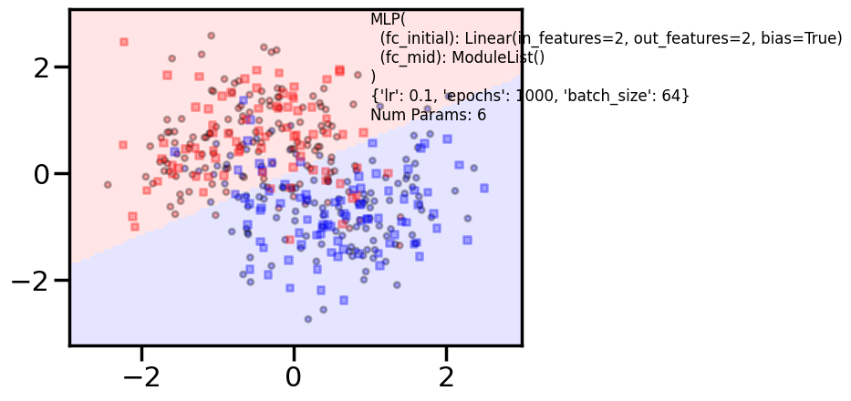
clf = MLPClassifier(input_dim=2, hidden_dim=20, output_dim=2, nonlinearity=fn.tanh, additional_hidden_wide=1)
clf.set_fit_params(epochs=1000)
print(clf)
clf.fit(X_train,y_train)/Users/rahul/Library/Caches/uv/archive-v0/nvTdsg5itG6f4n0ZtJtSg/lib/python3.14/site-packages/torch/nn/modules/loss.py:44: UserWarning: size_average and reduce args will be deprecated, please use reduction='mean' instead.
self.reduction: str = _Reduction.legacy_get_string(size_average, reduce)MLP(
(fc_initial): Linear(in_features=2, out_features=20, bias=True)
(fc_mid): ModuleList(
(0): Linear(in_features=20, out_features=20, bias=True)
)
(fc_final): Linear(in_features=20, out_features=2, bias=True)
)
{'lr': 0.1, 'epochs': 1000, 'batch_size': 64}
Num Params: 522 0%| | 0/1000 [00:00<?, ?it/s] 5%|▌ | 50/1000 [00:00<00:01, 497.52it/s] 10%|█ | 100/1000 [00:00<00:01, 472.57it/s] 15%|█▌ | 150/1000 [00:00<00:01, 477.72it/s] 20%|██ | 201/1000 [00:00<00:01, 486.57it/s] 25%|██▌ | 250/1000 [00:00<00:01, 486.30it/s] 30%|██▉ | 299/1000 [00:00<00:01, 485.23it/s] 35%|███▌ | 351/1000 [00:00<00:01, 495.50it/s] 40%|████ | 401/1000 [00:00<00:01, 494.32it/s] 45%|████▌ | 451/1000 [00:00<00:01, 491.06it/s] 50%|█████ | 501/1000 [00:01<00:01, 478.64it/s] 55%|█████▍ | 549/1000 [00:01<00:00, 455.46it/s] 60%|█████▉ | 595/1000 [00:01<00:00, 454.50it/s] 64%|██████▍ | 641/1000 [00:01<00:00, 454.17it/s] 70%|███████ | 700/1000 [00:01<00:00, 493.40it/s] 76%|███████▌ | 755/1000 [00:01<00:00, 509.67it/s] 81%|████████ | 807/1000 [00:01<00:00, 497.42it/s] 86%|████████▋ | 865/1000 [00:01<00:00, 519.92it/s] 92%|█████████▏| 924/1000 [00:01<00:00, 539.21it/s] 99%|█████████▊| 986/1000 [00:01<00:00, 560.92it/s]100%|██████████| 1000/1000 [00:01<00:00, 502.12it/s]with sns.plotting_context('poster'):
clf.plot_loss()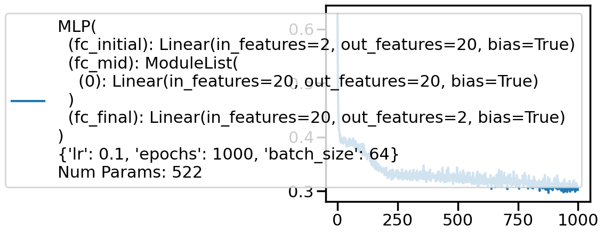
ypred = clf.predict(X_test)
#training and test accuracy
accuracy_score(y_train, clf.predict(X_train)), accuracy_score(y_test, ypred)(0.8666666666666667, 0.90625)with sns.plotting_context('poster'):
clf.plot_boundary(X_train, X_test, y_train, y_test)Experimentation Space
Here is space for you to play. You might want to collect accuracies on the traing and test set and plot on a grid of these parameters or some other visualization. Notice how you might want to adjust number of epochs for convergence.
for additional in [0, 2, 4]:
for hdim in [2, 10, 100, 1000]:
print('====================')
print('Additional', additional, "hidden", hdim)
clf = MLPClassifier(input_dim=2, hidden_dim=hdim, output_dim=2, nonlinearity=fn.tanh, additional_hidden_wide=additional)
if additional > 2 and hdim > 50:
clf.set_fit_params(epochs=1000)
else:
clf.set_fit_params(epochs=500)
print(clf)
clf.fit(X_train,y_train)
with sns.plotting_context('poster'):
clf.plot_loss()
clf.plot_boundary(X_train, X_test, y_train, y_test)
print("Train acc", accuracy_score(y_train, clf.predict(X_train)))
print("Test acc", accuracy_score(y_test, clf.predict(X_test)))/Users/rahul/Library/Caches/uv/archive-v0/nvTdsg5itG6f4n0ZtJtSg/lib/python3.14/site-packages/torch/nn/modules/loss.py:44: UserWarning: size_average and reduce args will be deprecated, please use reduction='mean' instead.
self.reduction: str = _Reduction.legacy_get_string(size_average, reduce)====================
Additional 0 hidden 2
MLP(
(fc_initial): Linear(in_features=2, out_features=2, bias=True)
(fc_mid): ModuleList()
(fc_final): Linear(in_features=2, out_features=2, bias=True)
)
{'lr': 0.1, 'epochs': 500, 'batch_size': 64}
Num Params: 12 0%| | 0/500 [00:00<?, ?it/s] 11%|█ | 56/500 [00:00<00:00, 559.73it/s] 23%|██▎ | 116/500 [00:00<00:00, 578.29it/s] 35%|███▌ | 175/500 [00:00<00:00, 582.37it/s] 48%|████▊ | 241/500 [00:00<00:00, 610.46it/s] 61%|██████ | 303/500 [00:00<00:00, 609.72it/s] 73%|███████▎ | 366/500 [00:00<00:00, 614.47it/s] 87%|████████▋ | 434/500 [00:00<00:00, 634.85it/s]100%|██████████| 500/500 [00:00<00:00, 624.44it/s]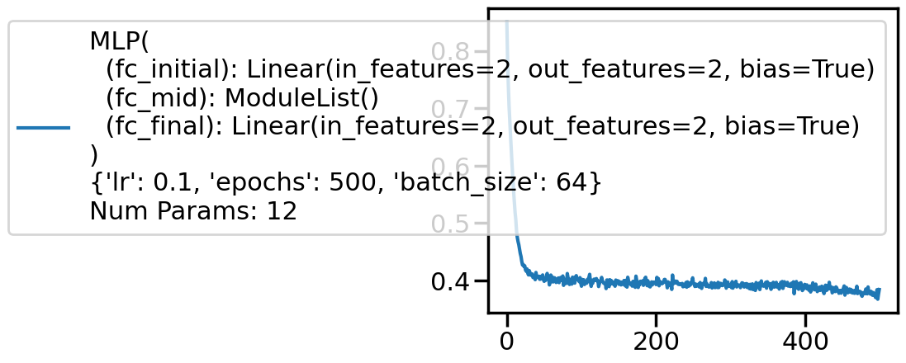
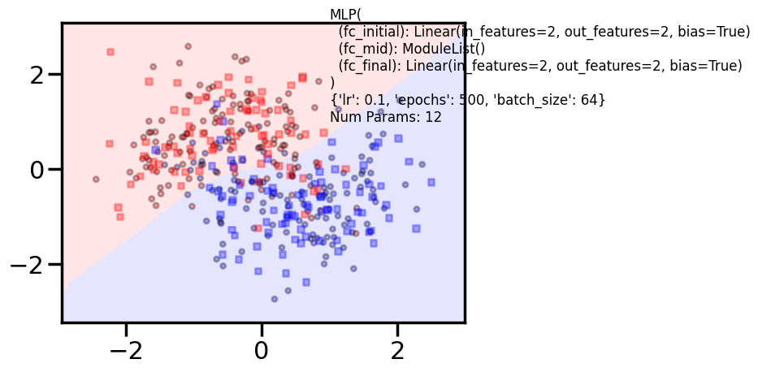
/Users/rahul/Library/Caches/uv/archive-v0/nvTdsg5itG6f4n0ZtJtSg/lib/python3.14/site-packages/torch/nn/modules/loss.py:44: UserWarning: size_average and reduce args will be deprecated, please use reduction='mean' instead.
self.reduction: str = _Reduction.legacy_get_string(size_average, reduce)Train acc 0.8416666666666667
Test acc 0.86875
====================
Additional 0 hidden 10
MLP(
(fc_initial): Linear(in_features=2, out_features=10, bias=True)
(fc_mid): ModuleList()
(fc_final): Linear(in_features=10, out_features=2, bias=True)
)
{'lr': 0.1, 'epochs': 500, 'batch_size': 64}
Num Params: 52 0%| | 0/500 [00:00<?, ?it/s] 14%|█▎ | 68/500 [00:00<00:00, 679.66it/s] 28%|██▊ | 139/500 [00:00<00:00, 692.70it/s] 42%|████▏ | 209/500 [00:00<00:00, 659.83it/s] 55%|█████▌ | 276/500 [00:00<00:00, 663.25it/s] 69%|██████▊ | 343/500 [00:00<00:00, 634.00it/s] 82%|████████▏ | 408/500 [00:00<00:00, 636.82it/s] 95%|█████████▌| 477/500 [00:00<00:00, 652.07it/s]100%|██████████| 500/500 [00:00<00:00, 655.08it/s]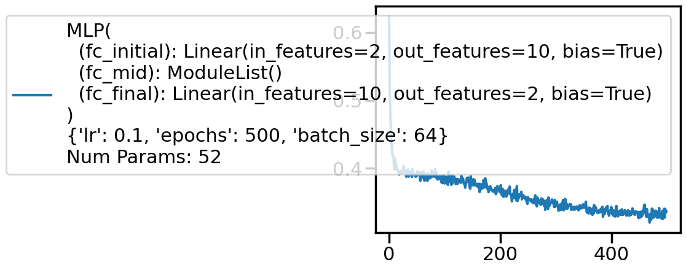
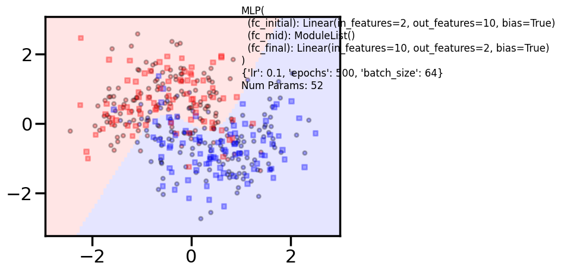
/Users/rahul/Library/Caches/uv/archive-v0/nvTdsg5itG6f4n0ZtJtSg/lib/python3.14/site-packages/torch/nn/modules/loss.py:44: UserWarning: size_average and reduce args will be deprecated, please use reduction='mean' instead.
self.reduction: str = _Reduction.legacy_get_string(size_average, reduce)Train acc 0.8625
Test acc 0.9
====================
Additional 0 hidden 100
MLP(
(fc_initial): Linear(in_features=2, out_features=100, bias=True)
(fc_mid): ModuleList()
(fc_final): Linear(in_features=100, out_features=2, bias=True)
)
{'lr': 0.1, 'epochs': 500, 'batch_size': 64}
Num Params: 502 0%| | 0/500 [00:00<?, ?it/s] 9%|▉ | 47/500 [00:00<00:00, 464.29it/s] 19%|█▉ | 94/500 [00:00<00:00, 456.01it/s] 28%|██▊ | 140/500 [00:00<00:00, 434.16it/s] 37%|███▋ | 184/500 [00:00<00:00, 432.37it/s] 46%|████▌ | 228/500 [00:00<00:00, 395.53it/s] 57%|█████▋ | 285/500 [00:00<00:00, 447.75it/s] 67%|██████▋ | 337/500 [00:00<00:00, 467.29it/s] 77%|███████▋ | 385/500 [00:00<00:00, 454.75it/s] 87%|████████▋ | 434/500 [00:00<00:00, 463.26it/s] 97%|█████████▋| 485/500 [00:01<00:00, 474.61it/s]100%|██████████| 500/500 [00:01<00:00, 452.92it/s]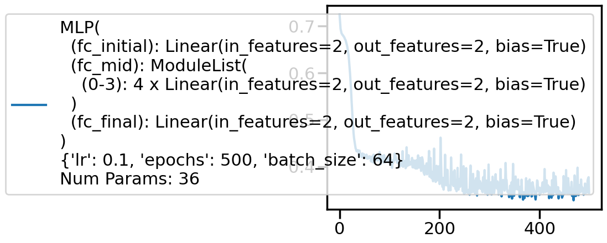
/Users/rahul/Library/Caches/uv/archive-v0/nvTdsg5itG6f4n0ZtJtSg/lib/python3.14/site-packages/torch/nn/modules/loss.py:44: UserWarning: size_average and reduce args will be deprecated, please use reduction='mean' instead.
self.reduction: str = _Reduction.legacy_get_string(size_average, reduce)Train acc 0.8583333333333333
Test acc 0.9
====================
Additional 0 hidden 1000
MLP(
(fc_initial): Linear(in_features=2, out_features=1000, bias=True)
(fc_mid): ModuleList()
(fc_final): Linear(in_features=1000, out_features=2, bias=True)
)
{'lr': 0.1, 'epochs': 500, 'batch_size': 64}
Num Params: 5002 0%| | 0/500 [00:00<?, ?it/s] 8%|▊ | 41/500 [00:00<00:01, 402.07it/s] 17%|█▋ | 83/500 [00:00<00:01, 406.95it/s] 25%|██▌ | 126/500 [00:00<00:00, 416.54it/s] 34%|███▍ | 170/500 [00:00<00:00, 422.57it/s] 43%|████▎ | 213/500 [00:00<00:00, 398.25it/s] 51%|█████ | 254/500 [00:00<00:00, 401.91it/s] 60%|█████▉ | 298/500 [00:00<00:00, 413.64it/s] 69%|██████▊ | 343/500 [00:00<00:00, 423.33it/s] 78%|███████▊ | 389/500 [00:00<00:00, 431.61it/s] 87%|████████▋ | 433/500 [00:01<00:00, 423.96it/s] 95%|█████████▌| 476/500 [00:01<00:00, 416.51it/s]100%|██████████| 500/500 [00:01<00:00, 413.59it/s]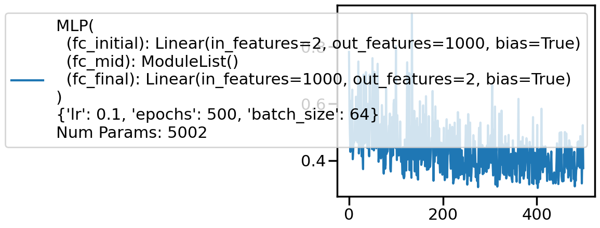
/Users/rahul/Library/Caches/uv/archive-v0/nvTdsg5itG6f4n0ZtJtSg/lib/python3.14/site-packages/torch/nn/modules/loss.py:44: UserWarning: size_average and reduce args will be deprecated, please use reduction='mean' instead.
self.reduction: str = _Reduction.legacy_get_string(size_average, reduce)Train acc 0.8333333333333334
Test acc 0.81875
====================
Additional 2 hidden 2
MLP(
(fc_initial): Linear(in_features=2, out_features=2, bias=True)
(fc_mid): ModuleList(
(0-1): 2 x Linear(in_features=2, out_features=2, bias=True)
)
(fc_final): Linear(in_features=2, out_features=2, bias=True)
)
{'lr': 0.1, 'epochs': 500, 'batch_size': 64}
Num Params: 24 0%| | 0/500 [00:00<?, ?it/s] 10%|█ | 50/500 [00:00<00:00, 494.77it/s] 21%|██ | 106/500 [00:00<00:00, 529.48it/s] 33%|███▎ | 163/500 [00:00<00:00, 546.94it/s] 44%|████▎ | 218/500 [00:00<00:00, 479.66it/s] 54%|█████▍ | 271/500 [00:00<00:00, 494.73it/s] 66%|██████▌ | 330/500 [00:00<00:00, 522.57it/s] 77%|███████▋ | 387/500 [00:00<00:00, 536.81it/s] 89%|████████▉ | 447/500 [00:00<00:00, 555.59it/s]100%|██████████| 500/500 [00:00<00:00, 537.32it/s]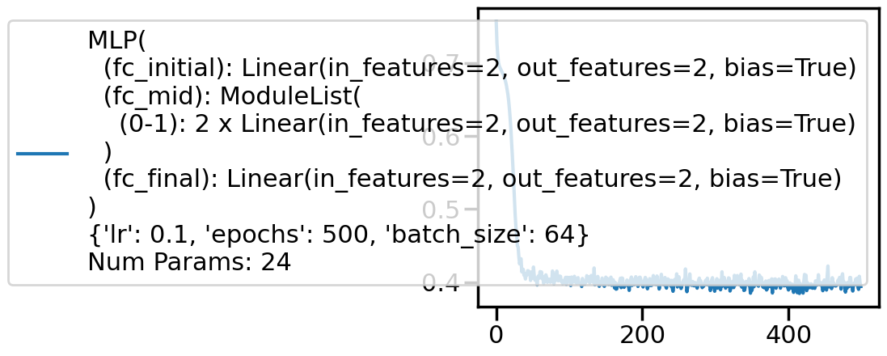
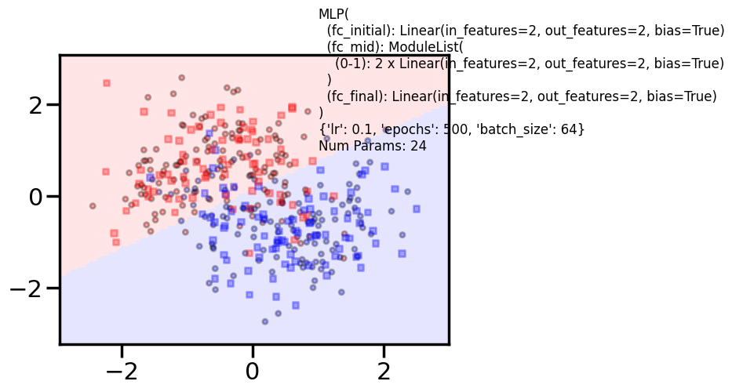
/Users/rahul/Library/Caches/uv/archive-v0/nvTdsg5itG6f4n0ZtJtSg/lib/python3.14/site-packages/torch/nn/modules/loss.py:44: UserWarning: size_average and reduce args will be deprecated, please use reduction='mean' instead.
self.reduction: str = _Reduction.legacy_get_string(size_average, reduce)Train acc 0.8333333333333334
Test acc 0.8625
====================
Additional 2 hidden 10
MLP(
(fc_initial): Linear(in_features=2, out_features=10, bias=True)
(fc_mid): ModuleList(
(0-1): 2 x Linear(in_features=10, out_features=10, bias=True)
)
(fc_final): Linear(in_features=10, out_features=2, bias=True)
)
{'lr': 0.1, 'epochs': 500, 'batch_size': 64}
Num Params: 272 0%| | 0/500 [00:00<?, ?it/s] 8%|▊ | 41/500 [00:00<00:01, 384.45it/s] 16%|█▌ | 80/500 [00:00<00:01, 347.55it/s] 25%|██▌ | 127/500 [00:00<00:00, 398.57it/s] 34%|███▍ | 172/500 [00:00<00:00, 417.40it/s] 45%|████▌ | 227/500 [00:00<00:00, 461.40it/s] 55%|█████▌ | 276/500 [00:00<00:00, 469.29it/s] 67%|██████▋ | 335/500 [00:00<00:00, 507.04it/s] 79%|███████▉ | 395/500 [00:00<00:00, 533.41it/s] 91%|█████████ | 455/500 [00:00<00:00, 552.52it/s]100%|██████████| 500/500 [00:01<00:00, 495.19it/s]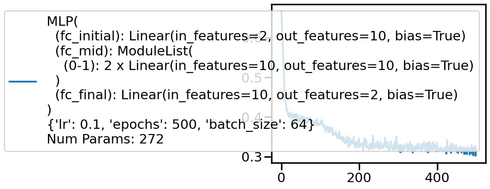
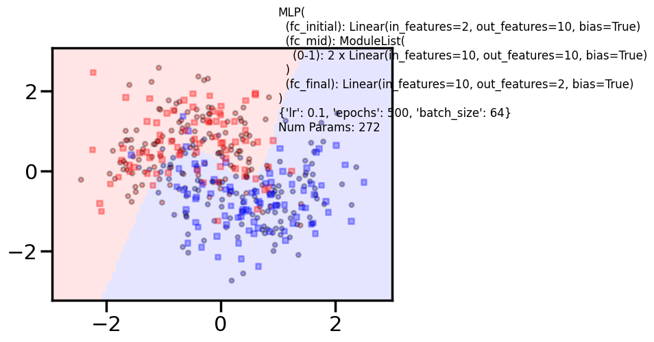
/Users/rahul/Library/Caches/uv/archive-v0/nvTdsg5itG6f4n0ZtJtSg/lib/python3.14/site-packages/torch/nn/modules/loss.py:44: UserWarning: size_average and reduce args will be deprecated, please use reduction='mean' instead.
self.reduction: str = _Reduction.legacy_get_string(size_average, reduce)Train acc 0.8791666666666667
Test acc 0.8625
====================
Additional 2 hidden 100
MLP(
(fc_initial): Linear(in_features=2, out_features=100, bias=True)
(fc_mid): ModuleList(
(0-1): 2 x Linear(in_features=100, out_features=100, bias=True)
)
(fc_final): Linear(in_features=100, out_features=2, bias=True)
)
{'lr': 0.1, 'epochs': 500, 'batch_size': 64}
Num Params: 20702 0%| | 0/500 [00:00<?, ?it/s] 9%|▉ | 45/500 [00:00<00:01, 443.63it/s] 18%|█▊ | 90/500 [00:00<00:00, 445.97it/s] 27%|██▋ | 136/500 [00:00<00:00, 447.84it/s] 36%|███▋ | 182/500 [00:00<00:00, 448.98it/s] 46%|████▌ | 228/500 [00:00<00:00, 449.72it/s] 55%|█████▍ | 274/500 [00:00<00:00, 450.21it/s] 64%|██████▍ | 320/500 [00:00<00:00, 450.02it/s] 73%|███████▎ | 366/500 [00:00<00:00, 446.34it/s] 82%|████████▏ | 411/500 [00:00<00:00, 443.80it/s] 91%|█████████ | 456/500 [00:01<00:00, 437.83it/s]100%|██████████| 500/500 [00:01<00:00, 422.66it/s]100%|██████████| 500/500 [00:01<00:00, 439.03it/s]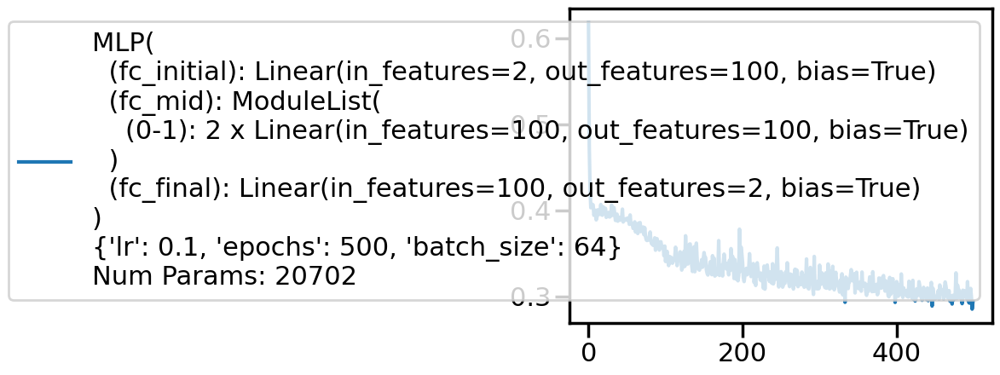
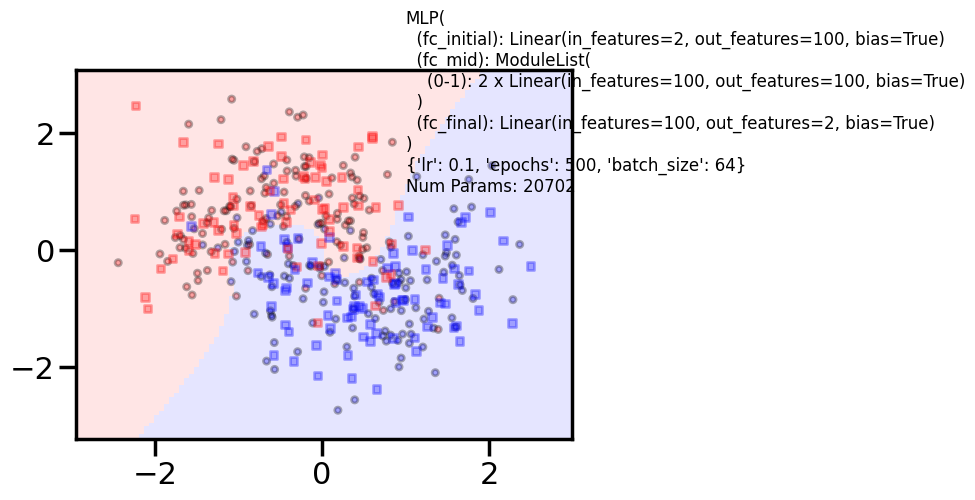
/Users/rahul/Library/Caches/uv/archive-v0/nvTdsg5itG6f4n0ZtJtSg/lib/python3.14/site-packages/torch/nn/modules/loss.py:44: UserWarning: size_average and reduce args will be deprecated, please use reduction='mean' instead.
self.reduction: str = _Reduction.legacy_get_string(size_average, reduce)Train acc 0.8708333333333333
Test acc 0.89375
====================
Additional 2 hidden 1000
MLP(
(fc_initial): Linear(in_features=2, out_features=1000, bias=True)
(fc_mid): ModuleList(
(0-1): 2 x Linear(in_features=1000, out_features=1000, bias=True)
)
(fc_final): Linear(in_features=1000, out_features=2, bias=True)
)
{'lr': 0.1, 'epochs': 500, 'batch_size': 64}
Num Params: 2007002 0%| | 0/500 [00:00<?, ?it/s] 1%|▏ | 7/500 [00:00<00:07, 67.29it/s] 3%|▎ | 14/500 [00:00<00:07, 67.71it/s] 4%|▍ | 21/500 [00:00<00:07, 67.80it/s] 6%|▌ | 28/500 [00:00<00:07, 66.11it/s] 7%|▋ | 35/500 [00:00<00:07, 65.78it/s] 8%|▊ | 42/500 [00:00<00:06, 65.45it/s] 10%|▉ | 49/500 [00:00<00:06, 64.99it/s] 11%|█ | 56/500 [00:00<00:08, 54.04it/s] 13%|█▎ | 63/500 [00:01<00:07, 56.84it/s] 14%|█▍ | 69/500 [00:01<00:12, 34.97it/s] 15%|█▍ | 74/500 [00:01<00:11, 37.34it/s] 16%|█▌ | 80/500 [00:01<00:10, 41.85it/s] 17%|█▋ | 87/500 [00:01<00:08, 47.29it/s] 19%|█▉ | 94/500 [00:01<00:07, 51.89it/s] 20%|██ | 100/500 [00:01<00:07, 53.67it/s] 21%|██▏ | 107/500 [00:02<00:07, 55.92it/s] 23%|██▎ | 114/500 [00:02<00:06, 58.56it/s] 24%|██▍ | 121/500 [00:02<00:06, 60.81it/s] 26%|██▌ | 128/500 [00:02<00:05, 62.52it/s] 27%|██▋ | 135/500 [00:02<00:05, 63.89it/s] 28%|██▊ | 142/500 [00:02<00:05, 64.33it/s] 30%|██▉ | 149/500 [00:02<00:05, 61.73it/s] 31%|███ | 156/500 [00:02<00:06, 54.26it/s] 32%|███▏ | 162/500 [00:02<00:06, 54.12it/s] 34%|███▎ | 168/500 [00:03<00:05, 55.59it/s] 35%|███▌ | 175/500 [00:03<00:05, 58.64it/s] 36%|███▋ | 182/500 [00:03<00:05, 60.65it/s] 38%|███▊ | 189/500 [00:03<00:05, 61.68it/s] 39%|███▉ | 196/500 [00:03<00:04, 62.77it/s] 41%|████ | 203/500 [00:03<00:04, 63.96it/s] 42%|████▏ | 210/500 [00:03<00:04, 62.43it/s] 43%|████▎ | 217/500 [00:03<00:04, 60.22it/s] 45%|████▍ | 224/500 [00:03<00:04, 61.73it/s] 46%|████▌ | 231/500 [00:04<00:04, 62.28it/s] 48%|████▊ | 238/500 [00:04<00:04, 63.32it/s] 49%|████▉ | 245/500 [00:04<00:03, 64.13it/s] 50%|█████ | 252/500 [00:04<00:04, 59.66it/s] 52%|█████▏ | 259/500 [00:04<00:03, 61.24it/s] 53%|█████▎ | 266/500 [00:04<00:03, 61.33it/s] 55%|█████▍ | 273/500 [00:04<00:03, 62.49it/s] 56%|█████▌ | 280/500 [00:04<00:03, 63.17it/s] 57%|█████▋ | 287/500 [00:04<00:03, 63.35it/s] 59%|█████▉ | 294/500 [00:05<00:03, 64.39it/s] 60%|██████ | 301/500 [00:05<00:03, 65.00it/s] 62%|██████▏ | 308/500 [00:05<00:02, 65.38it/s] 63%|██████▎ | 315/500 [00:05<00:02, 65.72it/s] 64%|██████▍ | 322/500 [00:05<00:02, 65.87it/s] 66%|██████▌ | 329/500 [00:05<00:02, 66.08it/s] 67%|██████▋ | 336/500 [00:05<00:02, 65.98it/s] 69%|██████▊ | 343/500 [00:05<00:02, 66.08it/s] 70%|███████ | 350/500 [00:05<00:02, 66.52it/s] 71%|███████▏ | 357/500 [00:05<00:02, 66.48it/s] 73%|███████▎ | 364/500 [00:06<00:02, 66.53it/s] 74%|███████▍ | 371/500 [00:06<00:01, 66.68it/s] 76%|███████▌ | 378/500 [00:06<00:01, 66.81it/s] 77%|███████▋ | 385/500 [00:06<00:01, 66.54it/s] 78%|███████▊ | 392/500 [00:06<00:01, 66.66it/s] 80%|███████▉ | 399/500 [00:06<00:01, 66.32it/s] 81%|████████ | 406/500 [00:06<00:01, 66.11it/s] 83%|████████▎ | 413/500 [00:06<00:01, 66.33it/s] 84%|████████▍ | 420/500 [00:06<00:01, 65.64it/s] 85%|████████▌ | 427/500 [00:07<00:01, 65.51it/s] 87%|████████▋ | 434/500 [00:07<00:00, 66.03it/s] 88%|████████▊ | 441/500 [00:07<00:00, 65.58it/s] 90%|████████▉ | 448/500 [00:07<00:00, 66.57it/s] 91%|█████████ | 455/500 [00:07<00:00, 66.94it/s] 92%|█████████▏| 462/500 [00:07<00:00, 67.54it/s] 94%|█████████▍| 469/500 [00:07<00:00, 67.19it/s] 95%|█████████▌| 476/500 [00:07<00:00, 66.82it/s] 97%|█████████▋| 483/500 [00:07<00:00, 65.31it/s] 98%|█████████▊| 490/500 [00:07<00:00, 65.98it/s] 99%|█████████▉| 497/500 [00:08<00:00, 66.46it/s]100%|██████████| 500/500 [00:08<00:00, 61.42it/s]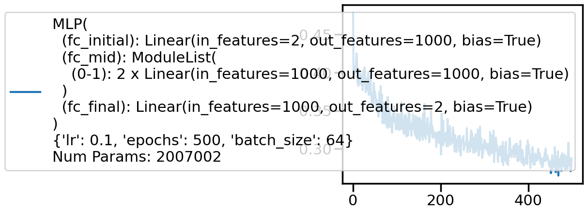
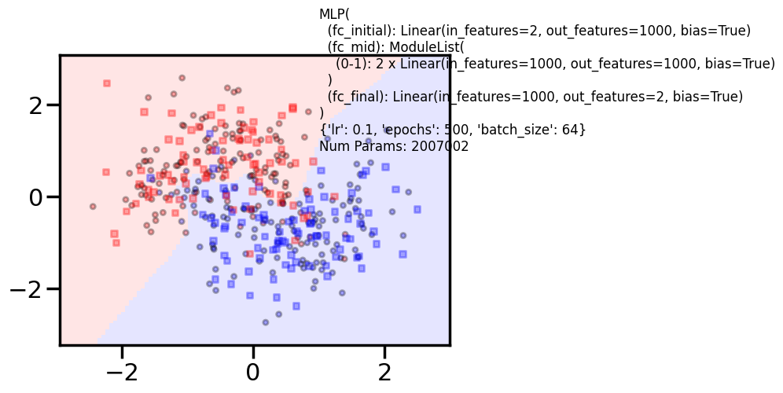
/Users/rahul/Library/Caches/uv/archive-v0/nvTdsg5itG6f4n0ZtJtSg/lib/python3.14/site-packages/torch/nn/modules/loss.py:44: UserWarning: size_average and reduce args will be deprecated, please use reduction='mean' instead.
self.reduction: str = _Reduction.legacy_get_string(size_average, reduce)Train acc 0.875
Test acc 0.86875
====================
Additional 4 hidden 2
MLP(
(fc_initial): Linear(in_features=2, out_features=2, bias=True)
(fc_mid): ModuleList(
(0-3): 4 x Linear(in_features=2, out_features=2, bias=True)
)
(fc_final): Linear(in_features=2, out_features=2, bias=True)
)
{'lr': 0.1, 'epochs': 500, 'batch_size': 64}
Num Params: 36 0%| | 0/500 [00:00<?, ?it/s] 11%|█ | 53/500 [00:00<00:00, 524.26it/s] 21%|██▏ | 107/500 [00:00<00:00, 529.30it/s] 32%|███▏ | 161/500 [00:00<00:00, 532.12it/s] 43%|████▎ | 215/500 [00:00<00:00, 529.75it/s] 54%|█████▍ | 269/500 [00:00<00:00, 531.64it/s] 65%|██████▍ | 323/500 [00:00<00:00, 533.10it/s] 75%|███████▌ | 377/500 [00:00<00:00, 534.08it/s] 86%|████████▌ | 431/500 [00:00<00:00, 534.28it/s] 97%|█████████▋| 485/500 [00:00<00:00, 534.52it/s]100%|██████████| 500/500 [00:00<00:00, 532.63it/s]
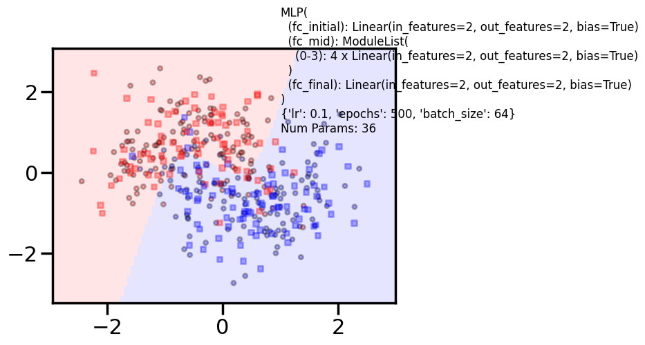
/Users/rahul/Library/Caches/uv/archive-v0/nvTdsg5itG6f4n0ZtJtSg/lib/python3.14/site-packages/torch/nn/modules/loss.py:44: UserWarning: size_average and reduce args will be deprecated, please use reduction='mean' instead.
self.reduction: str = _Reduction.legacy_get_string(size_average, reduce)Train acc 0.8583333333333333
Test acc 0.88125
====================
Additional 4 hidden 10
MLP(
(fc_initial): Linear(in_features=2, out_features=10, bias=True)
(fc_mid): ModuleList(
(0-3): 4 x Linear(in_features=10, out_features=10, bias=True)
)
(fc_final): Linear(in_features=10, out_features=2, bias=True)
)
{'lr': 0.1, 'epochs': 500, 'batch_size': 64}
Num Params: 492 0%| | 0/500 [00:00<?, ?it/s] 10%|█ | 51/500 [00:00<00:00, 507.17it/s] 21%|██ | 103/500 [00:00<00:00, 509.08it/s] 31%|███ | 155/500 [00:00<00:00, 510.50it/s] 41%|████▏ | 207/500 [00:00<00:00, 506.64it/s] 52%|█████▏ | 258/500 [00:00<00:00, 495.82it/s] 62%|██████▏ | 310/500 [00:00<00:00, 501.57it/s] 72%|███████▏ | 362/500 [00:00<00:00, 505.48it/s] 83%|████████▎ | 413/500 [00:00<00:00, 504.09it/s] 93%|█████████▎| 465/500 [00:00<00:00, 507.40it/s]100%|██████████| 500/500 [00:00<00:00, 505.71it/s]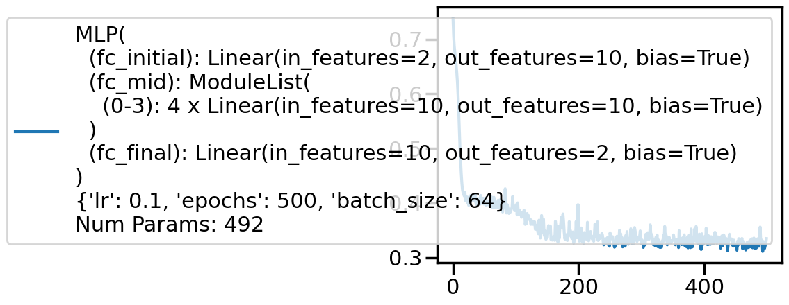
/Users/rahul/Library/Caches/uv/archive-v0/nvTdsg5itG6f4n0ZtJtSg/lib/python3.14/site-packages/torch/nn/modules/loss.py:44: UserWarning: size_average and reduce args will be deprecated, please use reduction='mean' instead.
self.reduction: str = _Reduction.legacy_get_string(size_average, reduce)Train acc 0.8416666666666667
Test acc 0.8375
====================
Additional 4 hidden 100
MLP(
(fc_initial): Linear(in_features=2, out_features=100, bias=True)
(fc_mid): ModuleList(
(0-3): 4 x Linear(in_features=100, out_features=100, bias=True)
)
(fc_final): Linear(in_features=100, out_features=2, bias=True)
)
{'lr': 0.1, 'epochs': 1000, 'batch_size': 64}
Num Params: 40902 0%| | 0/1000 [00:00<?, ?it/s] 4%|▎ | 35/1000 [00:00<00:02, 346.40it/s] 7%|▋ | 71/1000 [00:00<00:02, 349.39it/s] 11%|█ | 107/1000 [00:00<00:02, 349.86it/s] 14%|█▍ | 142/1000 [00:00<00:02, 349.19it/s] 18%|█▊ | 178/1000 [00:00<00:02, 350.16it/s] 21%|██▏ | 214/1000 [00:00<00:02, 350.81it/s] 25%|██▌ | 250/1000 [00:00<00:02, 351.42it/s] 29%|██▊ | 286/1000 [00:00<00:02, 347.52it/s] 32%|███▏ | 321/1000 [00:00<00:01, 343.64it/s] 36%|███▌ | 357/1000 [00:01<00:01, 346.16it/s] 39%|███▉ | 393/1000 [00:01<00:01, 347.53it/s] 43%|████▎ | 428/1000 [00:01<00:01, 346.10it/s] 46%|████▋ | 464/1000 [00:01<00:01, 348.19it/s] 50%|████▉ | 499/1000 [00:01<00:01, 348.06it/s] 54%|█████▎ | 535/1000 [00:01<00:01, 349.58it/s] 57%|█████▋ | 571/1000 [00:01<00:01, 350.39it/s] 61%|██████ | 607/1000 [00:01<00:01, 350.90it/s] 64%|██████▍ | 643/1000 [00:01<00:01, 350.46it/s] 68%|██████▊ | 679/1000 [00:01<00:00, 350.96it/s] 72%|███████▏ | 715/1000 [00:02<00:00, 351.44it/s] 75%|███████▌ | 751/1000 [00:02<00:00, 351.84it/s] 79%|███████▊ | 787/1000 [00:02<00:00, 352.39it/s] 82%|████████▏ | 823/1000 [00:02<00:00, 352.12it/s] 86%|████████▌ | 859/1000 [00:02<00:00, 351.81it/s] 90%|████████▉ | 895/1000 [00:02<00:00, 352.07it/s] 93%|█████████▎| 931/1000 [00:02<00:00, 352.65it/s] 97%|█████████▋| 967/1000 [00:02<00:00, 352.58it/s]100%|██████████| 1000/1000 [00:02<00:00, 349.41it/s]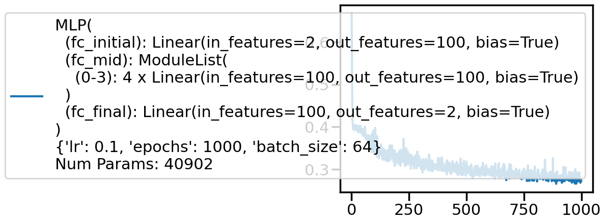
/Users/rahul/Library/Caches/uv/archive-v0/nvTdsg5itG6f4n0ZtJtSg/lib/python3.14/site-packages/torch/nn/modules/loss.py:44: UserWarning: size_average and reduce args will be deprecated, please use reduction='mean' instead.
self.reduction: str = _Reduction.legacy_get_string(size_average, reduce)Train acc 0.875
Test acc 0.88125
====================
Additional 4 hidden 1000
MLP(
(fc_initial): Linear(in_features=2, out_features=1000, bias=True)
(fc_mid): ModuleList(
(0-3): 4 x Linear(in_features=1000, out_features=1000, bias=True)
)
(fc_final): Linear(in_features=1000, out_features=2, bias=True)
)
{'lr': 0.1, 'epochs': 1000, 'batch_size': 64}
Num Params: 4009002 0%| | 0/1000 [00:00<?, ?it/s] 0%| | 4/1000 [00:00<00:28, 35.10it/s] 1%| | 8/1000 [00:00<00:28, 35.10it/s] 1%| | 12/1000 [00:00<00:27, 35.31it/s] 2%|▏ | 16/1000 [00:00<00:28, 34.91it/s] 2%|▏ | 20/1000 [00:00<00:28, 34.86it/s] 2%|▏ | 24/1000 [00:00<00:28, 34.83it/s] 3%|▎ | 28/1000 [00:00<00:28, 34.07it/s] 3%|▎ | 32/1000 [00:00<00:28, 34.37it/s] 4%|▎ | 36/1000 [00:01<00:27, 34.44it/s] 4%|▍ | 40/1000 [00:01<00:28, 34.10it/s] 4%|▍ | 44/1000 [00:01<00:27, 34.43it/s] 5%|▍ | 48/1000 [00:01<00:28, 33.80it/s] 5%|▌ | 52/1000 [00:01<00:29, 31.65it/s] 6%|▌ | 56/1000 [00:01<00:29, 31.92it/s] 6%|▌ | 60/1000 [00:01<00:28, 32.74it/s] 6%|▋ | 64/1000 [00:01<00:28, 33.24it/s] 7%|▋ | 68/1000 [00:02<00:27, 33.72it/s] 7%|▋ | 72/1000 [00:02<00:27, 33.95it/s] 8%|▊ | 76/1000 [00:02<00:26, 34.26it/s] 8%|▊ | 80/1000 [00:02<00:26, 34.36it/s] 8%|▊ | 84/1000 [00:02<00:26, 34.39it/s] 9%|▉ | 88/1000 [00:02<00:26, 34.38it/s] 9%|▉ | 92/1000 [00:02<00:26, 34.03it/s] 10%|▉ | 96/1000 [00:02<00:26, 34.16it/s] 10%|█ | 100/1000 [00:02<00:26, 34.20it/s] 10%|█ | 104/1000 [00:03<00:26, 34.13it/s] 11%|█ | 108/1000 [00:03<00:26, 34.28it/s] 11%|█ | 112/1000 [00:03<00:25, 34.44it/s] 12%|█▏ | 116/1000 [00:03<00:26, 33.83it/s] 12%|█▏ | 120/1000 [00:03<00:25, 33.90it/s] 12%|█▏ | 124/1000 [00:03<00:25, 34.06it/s] 13%|█▎ | 128/1000 [00:03<00:25, 34.30it/s] 13%|█▎ | 132/1000 [00:03<00:25, 34.43it/s] 14%|█▎ | 136/1000 [00:03<00:25, 34.52it/s] 14%|█▍ | 140/1000 [00:04<00:24, 34.66it/s] 14%|█▍ | 144/1000 [00:04<00:24, 34.47it/s] 15%|█▍ | 148/1000 [00:04<00:24, 34.64it/s] 15%|█▌ | 152/1000 [00:04<00:24, 34.81it/s] 16%|█▌ | 156/1000 [00:04<00:24, 34.73it/s] 16%|█▌ | 160/1000 [00:04<00:24, 34.95it/s] 16%|█▋ | 164/1000 [00:04<00:24, 34.02it/s] 17%|█▋ | 168/1000 [00:04<00:24, 34.22it/s] 17%|█▋ | 172/1000 [00:05<00:23, 34.50it/s] 18%|█▊ | 176/1000 [00:05<00:23, 34.42it/s] 18%|█▊ | 180/1000 [00:05<00:23, 34.60it/s] 18%|█▊ | 184/1000 [00:05<00:23, 34.83it/s] 19%|█▉ | 188/1000 [00:05<00:23, 35.02it/s] 19%|█▉ | 192/1000 [00:05<00:23, 34.90it/s] 20%|█▉ | 196/1000 [00:05<00:22, 35.12it/s] 20%|██ | 200/1000 [00:05<00:22, 34.83it/s] 20%|██ | 204/1000 [00:05<00:22, 34.83it/s] 21%|██ | 208/1000 [00:06<00:22, 34.99it/s] 21%|██ | 212/1000 [00:06<00:22, 35.10it/s] 22%|██▏ | 216/1000 [00:06<00:22, 34.47it/s] 22%|██▏ | 220/1000 [00:06<00:23, 33.66it/s] 22%|██▏ | 224/1000 [00:06<00:23, 33.51it/s] 23%|██▎ | 228/1000 [00:06<00:22, 33.72it/s] 23%|██▎ | 232/1000 [00:06<00:22, 33.94it/s] 24%|██▎ | 236/1000 [00:06<00:22, 34.09it/s] 24%|██▍ | 240/1000 [00:07<00:22, 34.01it/s] 24%|██▍ | 244/1000 [00:07<00:24, 31.27it/s] 25%|██▍ | 248/1000 [00:07<00:23, 32.12it/s] 25%|██▌ | 252/1000 [00:07<00:22, 33.02it/s] 26%|██▌ | 256/1000 [00:07<00:22, 33.74it/s] 26%|██▌ | 260/1000 [00:07<00:21, 34.08it/s] 26%|██▋ | 264/1000 [00:07<00:21, 33.80it/s] 27%|██▋ | 268/1000 [00:07<00:21, 34.05it/s] 27%|██▋ | 272/1000 [00:07<00:21, 34.28it/s] 28%|██▊ | 276/1000 [00:08<00:20, 34.69it/s] 28%|██▊ | 280/1000 [00:08<00:20, 34.82it/s] 28%|██▊ | 284/1000 [00:08<00:20, 34.54it/s] 29%|██▉ | 288/1000 [00:08<00:20, 34.82it/s] 29%|██▉ | 292/1000 [00:08<00:20, 34.89it/s] 30%|██▉ | 296/1000 [00:08<00:20, 34.75it/s] 30%|███ | 300/1000 [00:08<00:20, 34.71it/s] 30%|███ | 304/1000 [00:08<00:20, 34.64it/s] 31%|███ | 308/1000 [00:09<00:19, 34.64it/s] 31%|███ | 312/1000 [00:09<00:19, 34.55it/s] 32%|███▏ | 316/1000 [00:09<00:19, 34.64it/s] 32%|███▏ | 320/1000 [00:09<00:19, 34.81it/s] 32%|███▏ | 324/1000 [00:09<00:19, 34.87it/s] 33%|███▎ | 328/1000 [00:09<00:19, 34.66it/s] 33%|███▎ | 332/1000 [00:09<00:19, 34.25it/s] 34%|███▎ | 336/1000 [00:09<00:19, 34.50it/s] 34%|███▍ | 340/1000 [00:09<00:19, 34.38it/s] 34%|███▍ | 344/1000 [00:10<00:19, 34.40it/s] 35%|███▍ | 348/1000 [00:10<00:19, 34.25it/s] 35%|███▌ | 352/1000 [00:10<00:18, 34.45it/s] 36%|███▌ | 356/1000 [00:10<00:18, 34.63it/s] 36%|███▌ | 360/1000 [00:10<00:18, 34.31it/s] 36%|███▋ | 364/1000 [00:10<00:18, 34.48it/s] 37%|███▋ | 368/1000 [00:10<00:18, 34.52it/s] 37%|███▋ | 372/1000 [00:10<00:18, 34.30it/s] 38%|███▊ | 376/1000 [00:10<00:18, 34.42it/s] 38%|███▊ | 380/1000 [00:11<00:18, 34.37it/s] 38%|███▊ | 384/1000 [00:11<00:18, 34.11it/s] 39%|███▉ | 388/1000 [00:11<00:17, 34.21it/s] 39%|███▉ | 392/1000 [00:11<00:17, 34.40it/s] 40%|███▉ | 396/1000 [00:11<00:17, 34.56it/s] 40%|████ | 400/1000 [00:11<00:17, 34.72it/s] 40%|████ | 404/1000 [00:11<00:17, 34.92it/s] 41%|████ | 408/1000 [00:11<00:16, 34.97it/s] 41%|████ | 412/1000 [00:12<00:16, 34.94it/s] 42%|████▏ | 416/1000 [00:12<00:16, 34.63it/s] 42%|████▏ | 420/1000 [00:12<00:16, 34.75it/s] 42%|████▏ | 424/1000 [00:12<00:16, 34.77it/s] 43%|████▎ | 428/1000 [00:12<00:16, 34.89it/s] 43%|████▎ | 432/1000 [00:12<00:16, 34.81it/s] 44%|████▎ | 436/1000 [00:12<00:16, 34.18it/s] 44%|████▍ | 440/1000 [00:12<00:16, 34.06it/s] 44%|████▍ | 444/1000 [00:12<00:16, 34.18it/s] 45%|████▍ | 448/1000 [00:13<00:15, 34.55it/s] 45%|████▌ | 452/1000 [00:13<00:15, 34.66it/s] 46%|████▌ | 456/1000 [00:13<00:15, 34.73it/s] 46%|████▌ | 460/1000 [00:13<00:15, 34.92it/s] 46%|████▋ | 464/1000 [00:13<00:15, 34.92it/s] 47%|████▋ | 468/1000 [00:13<00:15, 35.16it/s] 47%|████▋ | 472/1000 [00:13<00:15, 34.92it/s] 48%|████▊ | 476/1000 [00:13<00:15, 34.63it/s] 48%|████▊ | 480/1000 [00:13<00:15, 34.58it/s] 48%|████▊ | 484/1000 [00:14<00:15, 33.84it/s] 49%|████▉ | 488/1000 [00:14<00:16, 31.54it/s] 49%|████▉ | 492/1000 [00:14<00:16, 31.51it/s] 50%|████▉ | 496/1000 [00:14<00:16, 30.79it/s] 50%|█████ | 500/1000 [00:14<00:15, 31.85it/s] 50%|█████ | 504/1000 [00:14<00:15, 32.89it/s] 51%|█████ | 508/1000 [00:14<00:14, 33.39it/s] 51%|█████ | 512/1000 [00:14<00:15, 32.19it/s] 52%|█████▏ | 516/1000 [00:15<00:14, 32.79it/s] 52%|█████▏ | 520/1000 [00:15<00:14, 33.30it/s] 52%|█████▏ | 524/1000 [00:15<00:14, 32.81it/s] 53%|█████▎ | 528/1000 [00:15<00:14, 33.58it/s] 53%|█████▎ | 532/1000 [00:15<00:13, 33.97it/s] 54%|█████▎ | 536/1000 [00:15<00:13, 34.38it/s] 54%|█████▍ | 540/1000 [00:15<00:13, 34.47it/s] 54%|█████▍ | 544/1000 [00:15<00:13, 34.67it/s] 55%|█████▍ | 548/1000 [00:16<00:12, 34.95it/s] 55%|█████▌ | 552/1000 [00:16<00:12, 34.94it/s] 56%|█████▌ | 556/1000 [00:16<00:12, 34.98it/s] 56%|█████▌ | 560/1000 [00:16<00:12, 34.50it/s] 56%|█████▋ | 564/1000 [00:16<00:12, 34.76it/s] 57%|█████▋ | 568/1000 [00:16<00:14, 30.63it/s] 57%|█████▋ | 572/1000 [00:16<00:14, 30.48it/s] 58%|█████▊ | 576/1000 [00:16<00:13, 31.12it/s] 58%|█████▊ | 580/1000 [00:17<00:13, 31.64it/s] 58%|█████▊ | 584/1000 [00:17<00:12, 32.34it/s] 59%|█████▉ | 588/1000 [00:17<00:12, 32.82it/s] 59%|█████▉ | 592/1000 [00:17<00:12, 33.16it/s] 60%|█████▉ | 596/1000 [00:17<00:12, 33.56it/s] 60%|██████ | 600/1000 [00:17<00:12, 33.27it/s] 60%|██████ | 604/1000 [00:17<00:11, 33.66it/s] 61%|██████ | 608/1000 [00:17<00:11, 33.86it/s] 61%|██████ | 612/1000 [00:17<00:11, 33.98it/s] 62%|██████▏ | 616/1000 [00:18<00:11, 34.01it/s] 62%|██████▏ | 620/1000 [00:18<00:11, 33.84it/s] 62%|██████▏ | 624/1000 [00:18<00:11, 34.08it/s] 63%|██████▎ | 628/1000 [00:18<00:10, 34.27it/s] 63%|██████▎ | 632/1000 [00:18<00:10, 34.08it/s] 64%|██████▎ | 636/1000 [00:18<00:10, 34.29it/s] 64%|██████▍ | 640/1000 [00:18<00:10, 34.49it/s] 64%|██████▍ | 644/1000 [00:18<00:10, 34.29it/s] 65%|██████▍ | 648/1000 [00:19<00:10, 34.21it/s] 65%|██████▌ | 652/1000 [00:19<00:10, 33.54it/s] 66%|██████▌ | 656/1000 [00:19<00:11, 29.79it/s] 66%|██████▌ | 660/1000 [00:19<00:11, 30.48it/s] 66%|██████▋ | 664/1000 [00:19<00:10, 31.06it/s] 67%|██████▋ | 668/1000 [00:19<00:10, 31.90it/s] 67%|██████▋ | 672/1000 [00:19<00:10, 32.33it/s] 68%|██████▊ | 676/1000 [00:19<00:09, 32.74it/s] 68%|██████▊ | 680/1000 [00:20<00:09, 32.16it/s] 68%|██████▊ | 684/1000 [00:20<00:09, 32.12it/s] 69%|██████▉ | 688/1000 [00:20<00:09, 32.56it/s] 69%|██████▉ | 692/1000 [00:20<00:09, 32.74it/s] 70%|██████▉ | 696/1000 [00:20<00:09, 33.12it/s] 70%|███████ | 700/1000 [00:20<00:09, 33.30it/s] 70%|███████ | 704/1000 [00:20<00:08, 33.42it/s] 71%|███████ | 708/1000 [00:20<00:08, 33.50it/s] 71%|███████ | 712/1000 [00:21<00:08, 33.53it/s] 72%|███████▏ | 716/1000 [00:21<00:08, 33.50it/s] 72%|███████▏ | 720/1000 [00:21<00:08, 33.71it/s] 72%|███████▏ | 724/1000 [00:21<00:08, 33.70it/s] 73%|███████▎ | 728/1000 [00:21<00:08, 33.38it/s] 73%|███████▎ | 732/1000 [00:21<00:07, 33.59it/s] 74%|███████▎ | 736/1000 [00:21<00:07, 33.81it/s] 74%|███████▍ | 740/1000 [00:21<00:07, 33.78it/s] 74%|███████▍ | 744/1000 [00:21<00:07, 33.85it/s] 75%|███████▍ | 748/1000 [00:22<00:07, 33.79it/s] 75%|███████▌ | 752/1000 [00:22<00:07, 34.12it/s] 76%|███████▌ | 756/1000 [00:22<00:07, 34.03it/s] 76%|███████▌ | 760/1000 [00:22<00:07, 33.74it/s] 76%|███████▋ | 764/1000 [00:22<00:06, 33.77it/s] 77%|███████▋ | 768/1000 [00:22<00:06, 33.76it/s] 77%|███████▋ | 772/1000 [00:22<00:06, 33.81it/s] 78%|███████▊ | 776/1000 [00:22<00:06, 33.94it/s] 78%|███████▊ | 780/1000 [00:23<00:06, 33.82it/s] 78%|███████▊ | 784/1000 [00:23<00:06, 33.78it/s] 79%|███████▉ | 788/1000 [00:23<00:06, 33.72it/s] 79%|███████▉ | 792/1000 [00:23<00:06, 33.46it/s] 80%|███████▉ | 796/1000 [00:23<00:06, 33.55it/s] 80%|████████ | 800/1000 [00:23<00:05, 33.68it/s] 80%|████████ | 804/1000 [00:23<00:05, 33.81it/s] 81%|████████ | 808/1000 [00:23<00:05, 33.72it/s] 81%|████████ | 812/1000 [00:23<00:05, 33.77it/s] 82%|████████▏ | 816/1000 [00:24<00:05, 33.51it/s] 82%|████████▏ | 820/1000 [00:24<00:05, 33.74it/s] 82%|████████▏ | 824/1000 [00:24<00:05, 33.58it/s] 83%|████████▎ | 828/1000 [00:24<00:05, 33.49it/s] 83%|████████▎ | 832/1000 [00:24<00:05, 33.53it/s] 84%|████████▎ | 836/1000 [00:24<00:04, 33.61it/s] 84%|████████▍ | 840/1000 [00:24<00:04, 33.77it/s] 84%|████████▍ | 844/1000 [00:24<00:04, 34.03it/s] 85%|████████▍ | 848/1000 [00:25<00:04, 33.95it/s] 85%|████████▌ | 852/1000 [00:25<00:04, 33.93it/s] 86%|████████▌ | 856/1000 [00:25<00:04, 33.70it/s] 86%|████████▌ | 860/1000 [00:25<00:04, 33.60it/s] 86%|████████▋ | 864/1000 [00:25<00:04, 33.76it/s] 87%|████████▋ | 868/1000 [00:25<00:03, 33.99it/s] 87%|████████▋ | 872/1000 [00:25<00:03, 32.86it/s] 88%|████████▊ | 876/1000 [00:25<00:03, 32.81it/s] 88%|████████▊ | 880/1000 [00:26<00:03, 33.14it/s] 88%|████████▊ | 884/1000 [00:26<00:03, 32.84it/s] 89%|████████▉ | 888/1000 [00:26<00:03, 32.92it/s] 89%|████████▉ | 892/1000 [00:26<00:03, 33.09it/s] 90%|████████▉ | 896/1000 [00:26<00:03, 33.20it/s] 90%|█████████ | 900/1000 [00:26<00:02, 33.40it/s] 90%|█████████ | 904/1000 [00:26<00:02, 33.58it/s] 91%|█████████ | 908/1000 [00:26<00:02, 33.05it/s] 91%|█████████ | 912/1000 [00:26<00:02, 33.10it/s] 92%|█████████▏| 916/1000 [00:27<00:02, 33.27it/s] 92%|█████████▏| 920/1000 [00:27<00:02, 33.31it/s] 92%|█████████▏| 924/1000 [00:27<00:02, 33.45it/s] 93%|█████████▎| 928/1000 [00:27<00:02, 33.66it/s] 93%|█████████▎| 932/1000 [00:27<00:02, 33.59it/s] 94%|█████████▎| 936/1000 [00:27<00:01, 33.70it/s] 94%|█████████▍| 940/1000 [00:27<00:01, 33.72it/s] 94%|█████████▍| 944/1000 [00:27<00:01, 33.76it/s] 95%|█████████▍| 948/1000 [00:28<00:01, 33.78it/s] 95%|█████████▌| 952/1000 [00:28<00:01, 32.83it/s] 96%|█████████▌| 956/1000 [00:28<00:01, 33.26it/s] 96%|█████████▌| 960/1000 [00:28<00:01, 33.65it/s] 96%|█████████▋| 964/1000 [00:28<00:01, 33.95it/s] 97%|█████████▋| 968/1000 [00:28<00:00, 34.28it/s] 97%|█████████▋| 972/1000 [00:28<00:00, 34.52it/s] 98%|█████████▊| 976/1000 [00:28<00:00, 34.61it/s] 98%|█████████▊| 980/1000 [00:28<00:00, 34.75it/s] 98%|█████████▊| 984/1000 [00:29<00:00, 34.75it/s] 99%|█████████▉| 988/1000 [00:29<00:00, 34.50it/s] 99%|█████████▉| 992/1000 [00:29<00:00, 34.61it/s]100%|█████████▉| 996/1000 [00:29<00:00, 34.47it/s]100%|██████████| 1000/1000 [00:29<00:00, 34.66it/s]100%|██████████| 1000/1000 [00:29<00:00, 33.84it/s]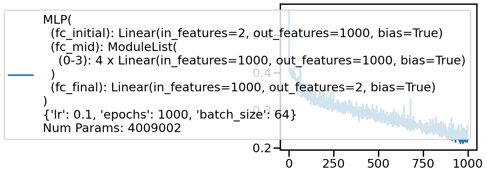
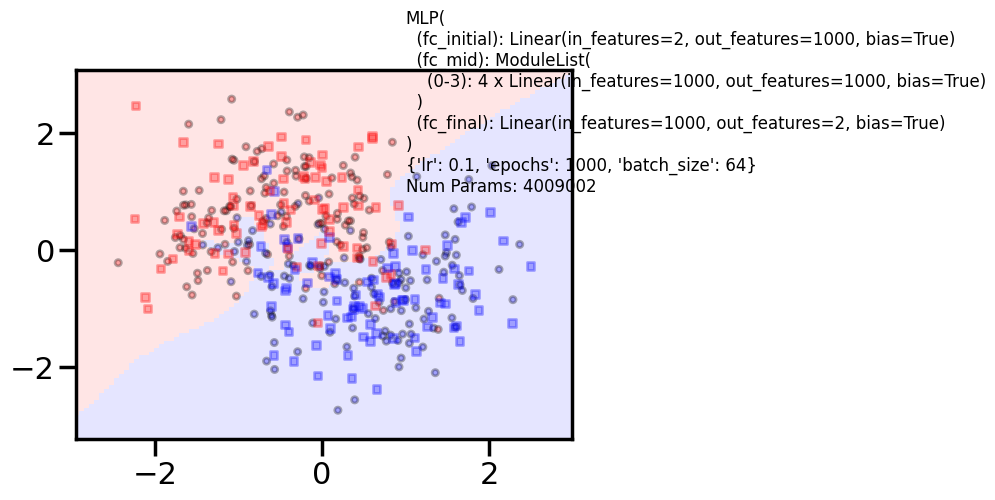
Train acc 0.9041666666666667
Test acc 0.8625